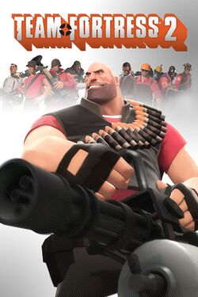

страница об игре тим фортнесс 2
Тим фортнесс 2 это шутер от первого лица с разными классами персонажей, можно выбрать снайпера, пиротеха, шпиона, солдата и т.п. Ещё здесь есть много режимов карт, например захват точек.
насчёт плюсов и минусов не знаю. Короче в этой игре нету минусов
системные требования: Операционная система Windows 7/Vista/XP Windows 7 Центральный процессор С частотой 1.7 ГГц или лучше Pentium 4 с 3 ГГц или лучше Объём RAM 512 MB ОЗУ 1 Гб ОЗУ Объём свободного места на жёстком диске 15 GB Видеокарта С поддержкой DirectX 8.1 С поддержкой DirectX 9.0c Сеть Широкополосное подключение к интернету
